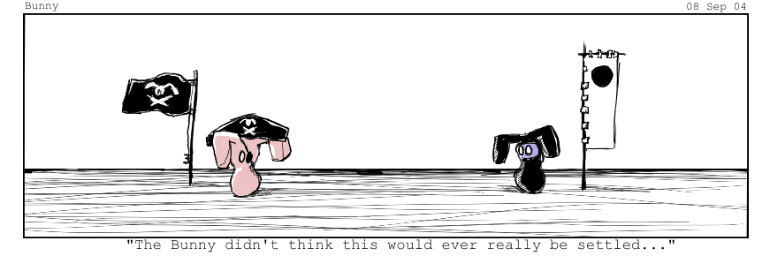

#8158 1 2006-04-18T17:49:44Z Zugbop I'm not being rude in the title, but if anyone has a better idea for the name, please tell me.

Ok, onto the main thingy. I've been thinking, and I've come up with away to combat snipers. I want to form a society (or something) which basically rates maps which have been sniped up. This will have to include many people, otherwise it won't work. The people will be given all fives, until the map reaches its deserved rating.

This mght make sniping pointless for snipers so they will stop.
We should use this thread as a communication board to tell each other what maps have been sniped. NOTE: Only maps with public ratings can get rated up. If you think a map proposed to be rated up does not desrve to be, contact the rest of the group on this thread.
Please PM me to join.

Thanks!
Odblob
#166206 2 2006-04-18T18:10:33Z McP3000 good idea, but it wont work.
Eventually the snipers will be banned, and their votes are cancelled. This would completely imbalance the rating system
However, it would be a good idea to create a society bent on trying to root out snipers and get them to stop or removed from numa.
#166237 3 2006-04-18T19:22:24Z 3v!1 mcp3000, Snipers arn't breaking any rules unless it's something like personal
or racist attacks. I agree with Zugbop on this one. I don't know how much work it would be to "cancel" a specific vote, but doing it on dozens (if not hundreds) of maps must take some time.
#166244 4 2006-04-18T19:37:33Z iangb what... the... f*ck!!!
You do realise that this idea totally makes useless the whole system of voting, right? As in everyone can voice their opinions. You're basically establishing a dictatorship whereby you can give every map what you, personally (or as a group) , happen to think the map deserves, regardless of how correct you are.
Muppets.
#166252 5 2006-04-18T19:56:15Z Zugbop Yes, but snipers aren't expressing their opinions, they are trying to make people unhappy, etc. by lowering votes. You don't like snipers, do you?
#166270 6 2006-04-18T21:01:29Z wilderness ASS is perfect.
#166271 7 2006-04-18T21:06:31Z Maniac You might not think of this as sniping, but that's actually what you're doing here: a bunch of people go rate a map the same value on the basis of "it deserves that value". The only difference being that your society will probably overrate maps.
Sniping is not the answer to sniping.
#166272 8 2006-04-18T21:07:08Z LouDog004 While your ideas are noble, your maths are flawed. Let's say you get a group of people to join ASS. Maybe, X amount of people. Now, everytime someone says "ZOMG, I've been SNIPED!!!" you swoop in and balance out the vote. Except you've really just given the map a rating of 5X/(X+1), regardless of what its true rating should be without the sniper (if you could even determine what that should be in the first place). You've also placed way more votes than are normally placed on any given map (seeing as how most maps go unrated), thus reducing the impact of subsequent voters. There is no magic ratio of anti snipers to snipers because each map has had different amounts of votes placed prior to and after snipage and anti snipage. Also, I could just submit maps and after one vote is placed, cry "sniper" to have your merry band of men come give me a bunch of 5'ers.
But really, this horse isn't dead enough yet, let's make more topics about it.

P.S. mcp3000, I registered a new account and sniped all your maps again LOLOLOLOLOLOLOLOL.
#166273 9 2006-04-18T21:07:22Z sweep what... the... f*ck!!!
You do realise that this idea totally makes useless the whole system of voting, right? As in everyone can voice their opinions. You're basically establishing a dictatorship whereby you can give every map what you, personally (or as a group) , happen to think the map deserves, regardless of how correct you are.
Muppets.
Quoted for emphasis.
You guys think they'll stop sniping if you do this? The problem will just get worse. Stop acting like vigilantes - if you want to police NUMA, ask Arachnid to become a mod, and if he says no, then just get over the whole thing. You can't control this.
#166275 10 2006-04-18T21:09:45Z Maniac This is a social problem. You can't fix it. Look at obesity and overweight children. Think a society full of dedicated anorexics is going to dissuade them? On the contrary, it doesn't work at all. In fact, it harms the anorexics too.
Problems like this take a very long time to go away. If they ever go away.
#166329 11 2006-04-18T23:21:19Z Guest i bet they wont go away, probably because there will always be idiot s ot there that snipe
#166356 12 2006-04-19T00:12:07Z Ultima For the record, if you wanted to get something done, do it yourself.
Don't bring other people into this mess
#166368 13 2006-04-19T00:50:17Z great_sea Okay, nevermind. Let me summarize me previous post by saying you should probably change the acronym.
#166380 14 2006-04-19T01:12:04Z Atilla No, no, no! You don't go around rating maps which have allegedly been sniped up! If you want to make the ratings accurate, just rate every map you play what you think it deserves, and rate as many maps as you can. After all, if a map has 30 votes, the one which belongs to a sniper isn't going to make much difference.
#166386 15 2006-04-19T01:19:33Z Ultima No, no, no! You don't go around rating maps which have allegedly been sniped up! If you want to make the ratings accurate, just rate every map you play what you think it deserves, and rate as many maps as you can. After all, if a map has 30 votes, the one which belongs to a sniper isn't going to make much difference.
Hmph.
What if a map
has been sniped down (with a zero) from a 4 to a 3.5 and giving it a 4 wouldn't change the rating?
If a map clearly has been sniped (with a zero) it deserves to be put back to the way it was before the sniping.
If the person is lying then they deserve what happens to them.
If the map has 30 votes, yeah it won't matter.
But many sniped maps have less than 10.
#166388 16 2006-04-19T01:20:24Z McP3000 P.S. mcp3000, I registered a new account and sniped all your maps again LOLOLOLOLOLOLOLOL.
your a bastard if your serious,
and if your not, for somereason you keep giving me shit so stop.
#166445 17 2006-04-19T03:26:03Z Bigblargh We already have problems with antisnipers. This won't help.
#166467 18 2006-04-19T04:05:11Z Atilla If the map has 30 votes, yeah it won't matter.
But many sniped maps have less than 10.
But if you're going to go around in a big pack rating maps which you say have been sniped, they soon will. So you should rate it what you think it deserves.
Also, I point out what the whole idea of having an average rating is. One of the main problems is that people think the average rating should reflect what they, personally, think, and stuff everyone else. So someone may see a map which is rated 4, wnd which they believe should be rated 3.5 and says "If I rate it 3.5 the score won't change. I'll give it 0 to drag the score down to where it should be." Rating in a way which forces the average to coincide with what you, in your infinite wisdom, have determined to be the One, True Score, rather than a compromise of what everyone thinks the map deserves, renders the whole system pointless, and is no different to sniping.
And I vote you change the name to RVG (Rampaging Vigilantes' Group). Or possibly just The Mob.
#166478 19 2006-04-19T04:27:50Z Ultima If the map has 30 votes, yeah it won't matter.
But many sniped maps have less than 10.
But if you're going to go around in a big pack rating maps which you say have been sniped, they soon will. So you should rate it what you think it deserves.
I'm not saying you should go around in big packs, I'm saying just one person.
Also, I point out what the whole idea of having an average rating is. One of the main problems is that people think the average rating should reflect what they, personally, think, and stuff everyone else. So someone may see a map which is rated 4, wnd which they believe should be rated 3.5 and says "If I rate it 3.5 the score won't change. I'll give it 0 to drag the score down to where it should be." Rating in a way which forces the average to coincide with what you, in your infinite wisdom, have determined to be the One, True Score, rather than a compromise of what everyone thinks the map deserves, renders the whole system pointless, and is no different to sniping.
2 things:
1. That would only work if you had a rather large amount of ratings and a 3.5 wouldn't bring it down.
2. If you were reasonable, you might leave a comment saying that you did, which would prove it isn't sniping.
#166578 20 2006-04-19T10:55:49Z Guest If the map has 30 votes, yeah it won't matter.
But many sniped maps have less than 10.
Just for an update thingy, I want to say I'm sorry that I've offended you all, and I'm wrong about this. And I've just got sniped on one of my maps from 4.5 to 3.5 in one vote. Grrrrr!

#166602 21 2006-04-19T12:14:23Z blue_tetris I give every map a five, just in case someone goes through and snipes them down. See, I have this theory.
There are snipers and anti-snipers (or 5nipers, pronounced five-nipers). They are waging a secret war on NUMA. Only through a balancing of snipers and 5nipers can the true raters' ratings be realized. Y'see, when I rate 5's, I subtly counteract the snipers' efforts. In this way, the people who don't care about ratings (like myself) can create equilibrium. All of us non-raters are effectively nullified so that you can make your ratings count.
This constant power struggle keeps NUMA working. If you ever believe that ratings don't make sense, it's because we snipers and 5nipers are not properly doing our jobs behind the scenes.
We'll try to work harder!
~Sincerely, Rear_Admiral_Tetris of the 417th naval division of the 5niper task fleet
#166607 22 2006-04-19T12:41:20Z krusch If you want to make the ratings accurate, just rate every map you play what you think it deserves, and rate as many maps as you can.
To be frank, I don't see the ratings ever being accurate. So do whatever the frig you want!
I think this comic pretty much sums up NUMA:

I just want to play N-maps and talk with the countless wonderful people I've met through this community.
Yahuh.
#166633 23 2006-04-19T14:35:41Z McP3000 loudog
i dont think your kidding anymore
a bunch of my maps just got snipd...again. Thats absolute shit.
#166667 24 2006-04-19T16:27:09Z sweep loudog
i dont think your kidding anymore
a bunch of my maps just got snipd...again. Thats absolute shit.
LouDog has been around for over a year, for about as long as me, and he is a very respected member. He is being sarcastic when he says he sniped you.
Please, please stop moaning. I don't mind people acknowledging that they have been sniped, but moaning will only lose your respect.
#166679 25 2006-04-19T17:21:03Z McP3000 yeah...it just chapps my ass, this will be the fourth episode of my maps getting sniped.
anyway, i think we should do what someone said earlier. Create a society where the "members" rate seriously what a map deserves if it had been sniped. Like, if a map got sniped, five from the community come and rate it. If i thought it was a 4, i give it a 4, if someone like zugbop thinks it deserves a 3, he gives them a 3.
Tell me what you think....
#166689 26 2006-04-19T17:38:37Z wilderness yeah...it just chapps my ass, this will be the fourth episode of my maps getting sniped.
anyway, i think we should do what someone said earlier. Create a society where the "members" rate seriously what a map deserves if it had been sniped. Like, if a map got sniped, five from the community come and rate it. If i thought it was a 4, i give it a 4, if someone like zugbop thinks it deserves a 3, he gives them a 3.
Tell me what you think....
I think you should appreciate the attention you get already.
Also, just stfu.
Or at least think before you reply. You're leaving your self wide open.
@ all of you: read krusch's post.
#166709 27 2006-04-19T18:27:47Z McP3000 pariah, i can see how your sick as hell of me, but i wasnt going to make this to bump up my ratings...i just want to do it as a whole. I also think krusch is just saying that because he always gets people to look at his maps and rate them....
#166723 28 2006-04-19T19:22:12Z Baraba he always gets people to look at his maps and rate them....
If I had a dollar for everytime you said that...
#166728 29 2006-04-19T19:43:13Z sweep mcp3000, the more you talk about ratings, the more you piss me off. If it really bothers you this much, be prepared to accept that a lot of people won't respect you very much as a result. You're as much of a problem as the actual snipers.
#166834 30 2006-04-19T23:34:32Z Ultima I also think krusch is just saying that because he always gets people to look at his maps and rate them....
*Wants this to be taken to the BnT*
You're the one who is doing that.
Do
not go around accusing people of things you obviously can't prove.
You're as much of a problem as the actual snipers.
Sums it up nicely.
#166872 31 2006-04-20T00:30:48Z Atilla 2 things:
1. That would only work if you had a rather large amount of ratings and a 3.5 wouldn't bring it down.
2. If you were reasonable, you might leave a comment saying that you did, which would prove it isn't sniping.
1. No, if you had four 4's and one 4.5, the displayed rating would be 4. If someone voted 3.5, the displayed rating would still be 4. 6 votes isn't what I'd call a "large amount".
2. Leaving a comment doesn't change anything. After all, a lot of snipers leave comments saying "j00 r t3h suXX0Rs! I wil r4t all j00're mapps 0!!1. HAHA LOLOL!!!11" The bottom line is that you are rating maps with the intent to drastically alter the average score (which is what snipers do) rather than rating them what they deserve.
To be frank, I don't see the ratings ever being accurate
That's because people DON'T rate maps what they deserve. Of course, I agree that there will always be idiots screwing the ratings. In general, the ratings OK, though - maps rated >3.5 are generally good, and maps rated < 2 are generally bad. Having another bunch of loons messing with the ratings isn't going to make things any better.
#166874 32 2006-04-20T00:36:13Z Ultima 2 things:
1. That would only work if you had a rather large amount of ratings and a 3.5 wouldn't bring it down.
2. If you were reasonable, you might leave a comment saying that you did, which would prove it isn't sniping.
1. No, if you had four 4's and one 4.5, the displayed rating would be 4. If someone voted 3.5, the displayed rating would still be 4. 6 votes isn't what I'd call a "large amount".
2. Leaving a comment doesn't change anything. After all, a lot of snipers leave comments saying "j00 r t3h suXX0Rs! I wil r4t all j00're mapps 0!!1. HAHA LOLOL!!!11" The bottom line is that you are rating maps with the intent to drastically alter the average score (which is what snipers do) rather than rating them what they deserve.
1 I'd say around 9-10 votes would be reasonably large. I get your point though.
2. If a sniper does that, they would be banned wouldn't they?
#166900 33 2006-04-20T01:34:56Z Atilla 2. If a sniper does that, they would be banned wouldn't they?
That's the point. Leaving a comment does not mitigate abuse of the rating system.
Also, they sometimes leave comments like "you're maps suk", which are not evidence of sniping.
#166955 34 2006-04-20T02:49:32Z disconinja Ratings are never going to be accurate. That's not a problem, 'cuz they don't matter much either. Sure, your map may go back a page in rating order, but odds are people will find it anyway. When i go looking for maps by ratings, I usually go to the 50th page or so. I suppose most others will too. So relax, your map will be found, even if it's not on the front page or the first five pages or whatever.
#167070 35 2006-04-20T10:05:07Z Ultima 2. If a sniper does that, they would be banned wouldn't they?
That's the point. Leaving a comment does not mitigate abuse of the rating system.
Also, they sometimes leave comments like "you're maps suk", which are not evidence of sniping.
My original point was that if you rated something a 0 but was reasonable and gave a comment as to why.
#167087 36 2006-04-20T13:16:48Z McP3000 ahhh.....no body loves me

anyway, i agree with atilla and disconinja, or anyone that agrees with them
#167125 37 2006-04-20T15:25:29Z shoftee Actually... LouDog was right all along. You guys DO suck at maths.
Let's analyze this one:
A map has a 5 after 5 votes...
Someone snipes it cuz he's a jealous n00b.
(5 * 5 + 0) / 6 = 25 / 6 = 4.1(6)
Some one 5nipes it in return...
(4.1(6) * 6 + 5) / 7 = 30 / 7 = 4.(285714)
Where's the balance in that? Did it return to a 5? NO!
Geez, you guys are so dumbassful.
Just give up, you won't fix anything with this. You'll just make it even worse. Really.
TS
#167134 38 2006-04-20T15:42:47Z sweep Mcp, I just read your comment on
this map.
Quote: mcp3000
Even though the tileset and play has nothing to do with Texas, i give you a 5/5 and fav for naming it after the best place in the world...
For someone who spends a lot of time people rating maps not based on their true quality, this is a very rich comment. I hope you were taking the piss, because if you weren't then you clearly don't understand the problem at hand.
#169629 39 2006-04-29T21:27:29Z Ben Miff Hum. If you want to combat snipers, just start leaving comments instead, since the snipers can't effect them and most, if not all, mappers hold comments in higher regards than the map rating.
#169648 40 2006-04-29T22:19:19Z McP3000 For someone who spends a lot of time people rating maps not based on their true quality, this is a very rich comment. I hope you were taking the piss, because if you weren't then you clearly don't understand the problem at hand.
okay, two things Sweep...First of all, i actually played the level, and loved it. Gave it a 5/5 because i thought it deserved it. The comment was meaningless blabber to be light-hearted...
Second, i dont really understand what you were saying. That sentence was extremely incoherent and sounded like you were saying two things at the same time.
#169698 41 2006-04-30T01:56:52Z Silent_witness I don't even have to worry about my levels getting sniped because, apparently, they all suck so badly that people won't hardly even ever play/comment on/rank them.
#169701 42 2006-04-30T02:07:39Z McP3000 awww...im sorry SiWi....they'll get better soon enough
#169717 43 2006-04-30T02:45:35Z Silent_witness awww...im sorry SiWi....they'll get better soon enough
Hey mcp3000, check your self-signature level contest page, I left you a question. Thank you.
Postscript: To anybody and everybody who may be reading this and doesn't suck at map making, if you don't mind, would you please look at my levels and tell me where and why they suck? You don't even have to play them if the problems are obvious enough and you don't even need to feel like you have to rate them if you do play them. I just want to become a quality N level creator. Thanks to all who do so.
#169806 44 2006-04-30T08:56:34Z sweep For someone who spends a lot of time people rating maps not based on their true quality, this is a very rich comment. I hope you were taking the piss, because if you weren't then you clearly don't understand the problem at hand.
okay, two things Sweep...First of all, i actually played the level, and loved it. Gave it a 5/5 because i thought it deserved it. The comment was meaningless blabber to be light-hearted...
Second, i dont really understand what you were saying. That sentence was extremely incoherent and sounded like you were saying two things at the same time.
Good. I'm glad you were joking.
Oh, and what I said seems entirely coherent.
For someone who spends a lot of time people rating maps not based on their true quality, this is a very rich comment. = for someone complaining about snipers like you this comment is pretty hypocritical.
I hope you were taking the piss, because if you weren't then you clearly don't understand the problem at hand. = I hope you were joking, because if you were not then you clearly don't understand what the ratings problem really is.
Understand now?
#169873 45 2006-04-30T14:26:17Z McP3000 thank you sweep, now i feel stupid....

#169923 46 2006-04-30T15:39:28Z sweep thank you sweep, now i feel stupid....
... to be fair, how was I supposed to react?
#169945 47 2006-04-30T16:53:59Z McP3000 i dunno
courtious and gentlemanly i guess

#170155 48 2006-04-30T23:39:20Z beanhead doesent the problem fix itself? i mean if everyones sniping and everyones getting sniped, all that does is lower the average rating for all the maps on numa, and if one person manages snipe to get onto the top 10 somehow, everyone else who thinks its rated too high will snipe it back down, problem solved?
#170156 49 2006-04-30T23:41:25Z wedgie doesent the problem fix itself? i mean if everyones sniping and everyones getting sniped, all that does is lower the average rating for all the maps on numa, and if one person manages snipe to get onto the top 10 somehow, everyone else who thinks its rated too high will snipe it back down, problem solved?
Yeah, then every map on NUMA is rated a 3. Just dont pay so much attention to ratings.